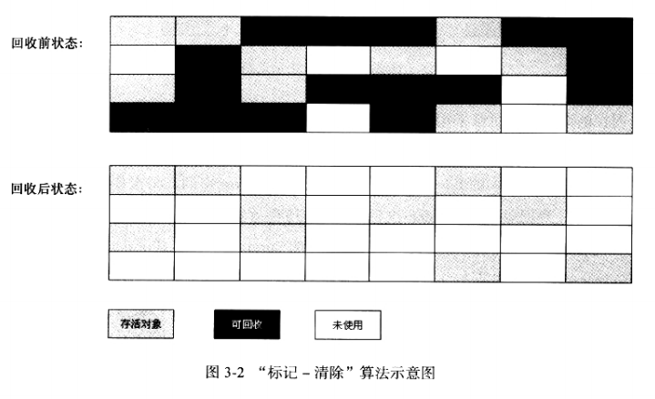
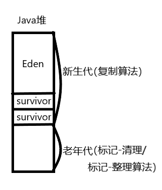

<!DOCTYPE HTML>
<html lang="">
<head><meta name="generator" content="Hexo 3.8.0">
    <!--Setting-->
    <meta charset="UTF-8">
    <meta name="viewport" content="width=device-width, user-scalable=no, initial-scale=1.0, maximum-scale=1.0, minimum-scale=1.0">
    <meta http-equiv="X-UA-Compatible" content="IE=Edge,chrome=1">
    <meta http-equiv="Cache-Control" content="no-siteapp">
    <meta http-equiv="Cache-Control" content="no-transform">
    <meta name="renderer" content="webkit|ie-comp|ie-stand">
    <meta name="apple-mobile-web-app-capable" content="杨柳潇的博客">
    <meta name="apple-mobile-web-app-status-bar-style" content="black">
    <meta name="format-detection" content="telephone=no,email=no,adress=no">
    <meta name="browsermode" content="application">
    <meta name="screen-orientation" content="portrait">
    <link rel="dns-prefetch" href="http://yangliuxiao.top">
    <!--SEO-->

    <meta name="keywords" content="Java,面试,JVM">


    <meta name="description" content="
垃圾收集器与内存分配策略垃圾回收简单介绍
几种垃圾收集算法的思路
垃圾收集器
内存分配策略

垃圾回收简单介绍 1. 程序计数器、虚拟机栈、本地方法栈的垃圾回收

程序计数器、VM栈、本地方法...">


<meta name="robots" content="all">
<meta name="google" content="all">
<meta name="googlebot" content="all">
<meta name="verify" content="all">

    <!--Title-->


<title>深入理解Java虚拟机（三） | 杨柳潇的博客</title>


    <link rel="alternate" href="/atom.xml" title="杨柳潇的博客" type="application/atom+xml">


    <link rel="icon" href="/favicon.jpg">

    


<link rel="stylesheet" href="/css/bootstrap.min.css?rev=3.3.7">
<link rel="stylesheet" href="/css/font-awesome.min.css?rev=4.5.0">
<link rel="stylesheet" href="/css/style.css?rev=@@hash">


    
	<div class="hide">
		<script type="text/javascript">
			var cnzz_protocol = (("https:" == document.location.protocol) ? " https://" : " http://");document.write(unescape("%3Cspan class='cnzz_stat_icon_1263868967 hide' %3E%3Cscript%20src%3D%22https%3A%2F%2Fs95.cnzz.com%2Fz_stat.php%3Fweb_id%3D1272564536%22%3E%3C%2Fscript%3E%3C/span%3E%3Cscript src='" + cnzz_protocol + "s19.cnzz.com/z_stat.php%3Fid%3D1263868967%26show%3Dpic1' type='text/javascript'%3E%3C/script%3E"));
		</script>
	</div>


    

</head>

</html>
<!--[if lte IE 8]>
<style>
    html{ font-size: 1em }
</style>
<![endif]-->
<!--[if lte IE 9]>
<div style="ie">你使用的浏览器版本过低，为了你更好的阅读体验，请更新浏览器的版本或者使用其他现代浏览器，比如Chrome、Firefox、Safari等。</div>
<![endif]-->

<body>
    <header class="main-header" style="background-image:url(/./img/background01.png)">
    <div class="main-header-box">
        <a class="header-avatar" href="/" title="Mute">
            
        </a>
        <div class="branding">
        	<!--<h2 class="text-hide">Snippet主题,从未如此简单有趣</h2>-->
            
                 
            
    	</div>
    </div>
</header>
    <nav class="main-navigation">
    <div class="container">
        <div class="row">
            <div class="col-sm-12">
                <div class="navbar-header"><span class="nav-toggle-button collapsed pull-right" data-toggle="collapse" data-target="#main-menu" id="mnav">
                    <span class="sr-only"></span>
                        <i class="fa fa-bars"></i>
                    </span>
                    <a class="navbar-brand" href="http://yangliuxiao.top">杨柳潇的博客</a>
                </div>
                <div class="collapse navbar-collapse" id="main-menu">
                    <ul class="menu">
                        
                            <li role="presentation" class="text-center">
                                <a href="/"><i class="fa "></i>Home</a>
                            </li>
                        
                            <li role="presentation" class="text-center">
                                <a href="/archives/"><i class="fa "></i>时间轴</a>
                            </li>
                        
                            <li role="presentation" class="text-center">
                                <a href="/about/"><i class="fa "></i>关于</a>
                            </li>
                        
                    </ul>
                </div>
            </div>
        </div>
    </div>
</nav>
    <section class="content-wrap">
        <div class="container">
            <div class="row">
                <main class="col-md-8 main-content m-post">
                    <p id="process"></p>
<article class="post">
    <div class="post-head">
        <h1 id="深入理解Java虚拟机（三）">
            
	            深入理解Java虚拟机（三）
            
        </h1>
        <div class="post-meta">
    
        <span class="categories-meta fa-wrap">
            <i class="fa fa-folder-open-o"></i>
            <a class="category-link" href="/categories/JVM/">JVM</a>
        </span>
    

    
        <span class="fa-wrap">
            <i class="fa fa-tags"></i>
            <span class="tags-meta">
                
                    <a class="tag-link" href="/tags/JVM/">JVM</a> <a class="tag-link" href="/tags/Java/">Java</a> <a class="tag-link" href="/tags/面试/">面试</a>
                
            </span>
        </span>
    

    
        
        <span class="fa-wrap">
            <i class="fa fa-clock-o"></i>
            <span class="date-meta">2018/05/25</span>
        </span>
        
    
</div>
            
            
    </div>
    
    <div class="post-body post-content">
        <hr>
<h3 id="垃圾收集器与内存分配策略"><a href="#垃圾收集器与内存分配策略" class="headerlink" title="垃圾收集器与内存分配策略"></a>垃圾收集器与内存分配策略</h3><p><a href="#垃圾回收简单介绍">垃圾回收简单介绍</a></p>
<p><a href="#几种垃圾收集算法的思路">几种垃圾收集算法的思路</a></p>
<p><a href="#垃圾收集器">垃圾收集器</a></p>
<p><a href="#内存分配策略">内存分配策略</a></p>
<hr>
<h4 id="垃圾回收简单介绍"><a href="#垃圾回收简单介绍" class="headerlink" title="垃圾回收简单介绍"></a>垃圾回收简单介绍</h4><p> <strong>1. 程序计数器、虚拟机栈、本地方法栈的垃圾回收</strong></p>
<blockquote>
<p>程序计数器、VM栈、本地方法栈3个区域随线程而生，随线程而灭，内存分配和回收都具备确定性，不需过多考虑回收的问题。<strong>因为方法结束或者线程结束，内存就跟着一起回收了。</strong></p>
</blockquote>
<p> <strong>2. 判断对象是否“已死”（即不可能再被任何途径使用）的方法</strong></p>
<blockquote>
<p><strong>① 引用计数法</strong></p>
<blockquote>
<p>给对象添加一个引用计数器，每当有一个地方引用它时，计数器就加一；当引用失效时，计数器值减一；任何时刻计数器为零的对象即为不可能再被使用的。</p>
<p><strong>优点：</strong> 实现简单，判定效率高</p>
<p><strong>缺点：</strong> 难以解决对象之间相互循环引用的问题</p>
</blockquote>
<p><strong>② 可达性分析算法</strong></p>
<blockquote>
<p>通过一系列的称为<strong>“GC Roots”</strong>的对象作为起始点，以这些节点开始向下搜索，搜索所走过的路径称为<strong>引用链</strong>（Reference chain）。当一个对象到GC Roots没有任何引用链相连，则证明此对象是不可用的。</p>
<ul>
<li><strong>可作为GC Roots的对象</strong></li>
</ul>
<blockquote>
<p>虚拟机栈（栈帧中的本地变量表）中引用对象</p>
<p>方法区中类静态属性引用的对象</p>
<p>方法区中常量引用的对象</p>
<p>本地方法栈中JNI（即Native方法，Java Native Interface）引用对象</p>
</blockquote>
<ul>
<li><strong>在JDK1.2之后，Java对引用进行了扩充</strong>，分为以下4种</li>
</ul>
<blockquote>
<p>“强引用”：只要存在，则永远不会被回收</p>
<p>“软引用”：将要内存溢出时，列入回收范围进行二次回收</p>
<p>“弱引用”：当GC发生，则回收</p>
<p>“虚引用”：唯一存在目的是在这个对象被回收时返回一个系统通知</p>
</blockquote>
</blockquote>
</blockquote>
<p> <strong>3. finalize()方法</strong></p>
<blockquote>
<p>即使在可达性分析中不可达的对象，也并非是“非死不可”的。要真正宣告一个对象死亡，至少要经历两次标记过程。</p>
<p> ① <strong>没有覆盖</strong>finalize()方法（Object.finalize()）</p>
<blockquote>
<p>在进行可达性分析后发现没有与GC Roots相连的引用链，并被判断为“没有必要执行finalize()方法”，被<strong>直接回收</strong>。</p>
</blockquote>
<p> ② <strong>覆盖</strong>了Object.finalize()</p>
<blockquote>
<p>在进行可达性分析后发现没有与GC Roots相连的引用链后，被判断<strong>有必要执行finalize()方法</strong>，那么该对象被放置在F-Queue队列中，并在稍后由一个虚拟机自动建立的、低优先级的Finalize线程去执行finalize()方法。若执行后，该对象与引用链建立了关联，则<strong>第二次标记</strong>时会将该对象移出即将回收的集合，否则回收该对象。</p>
</blockquote>
<p><strong>缺点：</strong> <strong>不鼓励使用这种方法</strong>来拯救对象。finalize()不是C/C++中的析构函数，其<strong>运行代价高昂，不确定性大，无法保证各个对象的调用顺序</strong>。finalize()能做的，try-finally或者其他方式都能做得更好更及时。</p>
</blockquote>
<p> <strong>4. 对方法区的回收</strong></p>
<blockquote>
<p><strong>方法区（HotSpot虚拟机中的永久代）</strong>垃圾收集的“性价比”一般比较低，在堆中，尤其在新生代中，常规应用进行一次垃圾收集一般可以回收70%~95%的空间，而永久代的<strong>效率远低于此</strong>。</p>
<p>方法区的垃圾收集主要回收两部分内容：<strong>废弃常量</strong>和<strong>无用的类</strong>。</p>
<p> ① 回收废弃常量：无任何对象引用该存在于常量池中的常量</p>
<p> ② 什么样的类是无用的类：</p>
<blockquote>
<ol>
<li><p>该类的所有实例都已经被回收，即Java堆中不存在该类任何实例</p>
</li>
<li><p>加载该类的ClassLoader已被回收</p>
</li>
<li><p>该类对应的java.lang.Class对象无引用，也无法在任何地方通过反射访问该类的任何方法</p>
</li>
</ol>
</blockquote>
<p>在大量使用反射、动态代理、CGLib等ByteCode框架、动态生成Jsp以及OSGi这类频繁自定义ClassLoader的场景都需要VM具备类卸载的功能，以保证永久代（方法区）不会溢出。</p>
</blockquote>
<hr>
<h4 id="几种垃圾收集算法的思路"><a href="#几种垃圾收集算法的思路" class="headerlink" title="几种垃圾收集算法的思路"></a>几种垃圾收集算法的思路</h4><p> <strong>1.  标记-清除算法</strong>（最基础）</p>
<blockquote>
<p>标记：通过①引用技术②可达性分析 标记出“已死”的对象</p>
<p>清除：回收被标记的对象</p>
<p><strong>不足：</strong></p>
<blockquote>
<p>①效率问题：标记、清除两个过程的效率都不高</p>
<p>②空间问题：会产生大量不连续的内存碎片</p>
</blockquote>
<p></p>
</blockquote>
<p> <strong>2.  复制算法</strong>（用以回收新生代）</p>
<blockquote>
<p>为了解决效率问题，将可用内存划分为大小相等的两块（这样内存利用率太低，有更好的方法，下面介绍），每次只使用其中的一块。当这一块的内存用完了，就将还存活着的对象复制到另外一块上，然后把已使用过的内存空间一次清理掉。</p>
<p><strong>优点：</strong> 实现简单、运行高效</p>
<p><strong>缺点：</strong> 将内存缩小为原来的一半，代价高昂</p>
<ul>
<li><strong>改进后的复制算法</strong></li>
</ul>
<blockquote>
<p>研究表明，新生代中的对象98%是“朝生夕死”的，所以可以把内存分为一块较大的Eden区（占80%），两块较小的survivor区（各占10%）</p>
<p>每次使用Eden和其中一块survivor区，即只有10%的内存没有被利用</p>
<p>当特殊情况，如GC后，10%的survivor区不够用时（存活下来的对象大于10%）时，由其他内存（老年代）进行分配担保。</p>
</blockquote>
</blockquote>
<p> <strong>3. 标记-整理算法</strong>（用以回收老年代）</p>
<blockquote>
<p>标记：通过①引用技术②可达性分析 标记出“已死”的对象</p>
<p>整理：所有存活对象都向一端移动，然后直接清理掉端边界以外的内存</p>
</blockquote>
<p> <strong>4. 分代收集算法</strong></p>
<blockquote>
<p>当前商业虚拟机的GC都采用“分代收集”（Generational Collection），这种算法没有什么新的思想，只是根据对象存活周期的不同将内存划分为几块。一般将Java堆分为新生代和老年代，根据各个年代特点采用最适当的收集算法。</p>
<ul>
<li><p>新生代：大批对象死去，少量存活——复制算法</p>
</li>
<li><p>老年代：对象存活率高，无额外空间进行分配担保——“标记-清理”算法；“标记-整理”算法</p>
<p></p>
</li>
</ul>
</blockquote>
<hr>
<h4 id="垃圾收集器"><a href="#垃圾收集器" class="headerlink" title="垃圾收集器"></a>垃圾收集器</h4><ul>
<li><p>Young  generation : ①Serial ; ②Parnew ; ③Parallel  Scavenge</p>
</li>
<li><p>Tenured generation : ①CMS ; ②Serial Old ; ③Parallel Old</p>
</li>
</ul>
<p>没有最好的收集器，只有对具体应用最合适的收集器</p>
<p> <strong>1. Serial 收集器</strong> </p>
<blockquote>
<p>单线程的收集器；<strong>Stop the world</strong></p>
<ul>
<li><p>优点：简单高效，由于没有线程交互的开销，专心做GC，自然可以获得<strong>最高的单线程收集效率</strong></p>
</li>
<li><p>缺点：在它进行GC时，<strong>必须暂停其他所有工作线程</strong></p>
</li>
</ul>
</blockquote>
<p> <strong>2. ParNew收集器</strong></p>
<blockquote>
<p>Serial的<strong>多线程版本</strong></p>
<ul>
<li>优点</li>
</ul>
<blockquote>
<p>①随<strong>可用CPU的增加</strong>，有利于GC时系统资源的有效利用</p>
<p>②除Serial之外，<strong>只有它能与CMS收集器配合工作</strong></p>
</blockquote>
<ul>
<li>缺点：在单CPU下相较Serial要差，甚至由于线程交互的开销，在2个CPU下都不一定超越Serial。</li>
</ul>
</blockquote>
<p> <strong>3. Parallel Scavenge收集器</strong></p>
<blockquote>
<p><strong>目的与其他收集器不同</strong>，在于达到一个可控制的吞吐量，关注点在于<strong>停顿时间短、高吞吐量</strong></p>
<ul>
<li><p>停顿时间短：适合需要与用户交互的程序，<strong>良好的响应速度</strong>能提升用户体验</p>
</li>
<li><p>高吞吐量：可以<strong>高效率地利用CPU时间</strong>，适合在<strong>后台运算</strong>而不需太多交互的任务（<del>到底需不需要交互？？</del>）</p>
</li>
</ul>
</blockquote>
<p> <strong>4. Serial Old收集器</strong></p>
<blockquote>
<p>是Serial的<strong>老年代</strong>版本</p>
<p><strong>单线程</strong>收集器</p>
<p>使用“标记-整理”算法</p>
</blockquote>
<p> <strong>5. Parallel Old收集器</strong></p>
<blockquote>
<p>Parallel Scavenge的<strong>老年代</strong>版本</p>
<p><strong>多线程</strong>收集器</p>
<p>“标记-整理”</p>
<p>设计出用以<strong>和新生代的Parallel Scavenge配合</strong>，否则Parallel Scavenge只能和Serial Old配合（其不能和CMS合作使用），拖累性能</p>
</blockquote>
<p> <strong>6. CMS收集器（Concurrent Mark Sweep）</strong>——“标记-清除”</p>
<blockquote>
<p>是一种以获取<strong>最短回收停顿时间</strong>为目标的收集器</p>
<p>重视服务的<strong>响应速度</strong></p>
<ul>
<li>过程分为4个步骤：</li>
</ul>
<blockquote>
<p>①初始标记<strong>（Stop the World）</strong>：仅仅标记GC Roots能<strong>直接</strong>关联到的对象，速度很快</p>
<p>②并发标记——GC Roots Tracing</p>
<p>③重新标记<strong>（Stop the World）</strong>：<strong>修正</strong>并发标记期间因用户程序继续运作而导致标记变动的那一部分对象的标记记录，<strong>第三步的时间大于第一步，远远小于第二步</strong>。</p>
<p>④并发清除</p>
</blockquote>
<ul>
<li><p><strong>优点</strong>：并发收集、低停顿</p>
</li>
<li><p><strong>缺点</strong>：</p>
</li>
</ul>
<blockquote>
<p>①对CPU资源敏感（需并发）</p>
<p>②无法处理<strong>浮动垃圾</strong>（在第四步并发清除时产生的垃圾，由于在标记步骤之后产生，无法在当此GC中处理）</p>
<p>③“标记-清除”会产生<strong>空间碎片</strong></p>
</blockquote>
</blockquote>
<p> <strong>7. G1收集器</strong>（Garbage First）</p>
<blockquote>
<p>面向<strong>服务端应用</strong>的垃圾收集器</p>
<ul>
<li><strong>特点</strong>：</li>
</ul>
<blockquote>
<p>①并行与并发：能充分利用多核、多CPU的硬件优势，缩短Stop-the-World的停顿时间</p>
<p>②<strong>分代收集</strong>：虽然不需和其他收集器配合，而是<strong>独立管理</strong>整个GC堆，但仍<strong>采用不同方式</strong>处理新对象和大年龄的旧对象以获取更好的收集效果</p>
<p>③<strong>空间整合</strong>：基于<strong>“标记-整理”和“复制”算法</strong>，不会产生空间碎片</p>
<p>④可预测的停顿</p>
</blockquote>
<ul>
<li>4个步骤：</li>
</ul>
<blockquote>
<p>初始标记（Stop-the-World）</p>
<p>并发标记</p>
<p>最终标记（Stop-the-World）</p>
<p>筛选回收</p>
</blockquote>
</blockquote>
<hr>
<h4 id="内存分配策略"><a href="#内存分配策略" class="headerlink" title="内存分配策略"></a>内存分配策略</h4><p>对象的内存分配，大部分在堆上分配（<strong>也可能出现标量替换，栈上分配等编译优化技术</strong>）</p>
<p>对象主要分配在新生代的Eden区上，少数情况也可能直接分配在老年代</p>
<p>若启动了本地线程分配缓冲，则按线程优先在TLAB（Thread Local Allocation Buffer）上分配</p>
<p> <strong>1. 对象优先在Eden分配</strong></p>
<blockquote>
<p>大多数情况下，对象在新生代Eden区中分配</p>
<ul>
<li><strong>GC的种类</strong>：</li>
</ul>
<blockquote>
<p>①<strong>Minor GC</strong>：发生在新生代的GC，非常频繁，回收速度也较快</p>
<p>②<strong>Major GC（一般同时伴随Minor GC）</strong>：发生在老年代的GC，会比Minor GC慢十倍以上</p>
<p>③<strong>Full GC</strong>：清理整个堆</p>
</blockquote>
</blockquote>
<p> <strong>2. 大对象直接进入老年代</strong></p>
<blockquote>
<p>大对象：需要<strong>大量连续内存空间</strong>的Java对象</p>
<p><strong>要避免“大对象”</strong>，经常出现大对象容易导致内存还有不少空间时就提前触发GC以获取足够的连续空间</p>
</blockquote>
<p> <strong>3. 长期存活的对象将进入老年代</strong></p>
<blockquote>
<p>虚拟机给每个对象定义了一个<strong>对象年龄（Age）</strong>的计数器</p>
<p>对象<strong>经过一次Minor GC则“年龄”加一</strong></p>
<p>“年龄”增加到一定程度（默认15），则晋升至老年代</p>
</blockquote>
<p> <strong>4. 空间分配担保</strong></p>
<blockquote>
<p>在发生Minor GC之前，VM会先检查<strong>老年代最大可用连续空间</strong>是否大于新生代所有对象总空间。若是，则此次Minor GC安全；若否，则查看是否允许担保失败。若允许，则将老年代剩余空间与历次晋升到老年代对象大小平均值相比，若大于，则尝试进行一次有风险的Minor GC；若小于或VM不允许冒险，则Minor GC改为一次Full GC。</p>
</blockquote>

    </div>
    
    <div class="post-footer">
        <div>
            
        </div>
        <div>
            
        </div>
    </div>
</article>

<div class="article-nav prev-next-wrap clearfix">
    
        <a href="/2018/05/25/深入理解Java虚拟机（四）/" class="pre-post btn btn-default" title="深入理解Java虚拟机（四）">
            <i class="fa fa-angle-left fa-fw"></i><span class="hidden-lg">上一篇</span>
            <span class="hidden-xs">深入理解Java虚拟机（四）</span>
        </a>
    
    
        <a href="/2018/05/25/深入理解Java虚拟机（二）/" class="next-post btn btn-default" title="深入理解Java虚拟机（二）">
            <span class="hidden-lg">下一篇</span>
            <span class="hidden-xs">深入理解Java虚拟机（二）</span><i class="fa fa-angle-right fa-fw"></i>
        </a>
    
</div>


                </main>
                
                    <aside id="article-toc" role="navigation" class="col-md-4">
    <div class="widget">
        <h3 class="title">Table of Contents</h3>
        
            <ol class="toc"><li class="toc-item toc-level-3"><a class="toc-link" href="#垃圾收集器与内存分配策略"><span class="toc-text">垃圾收集器与内存分配策略</span></a><ol class="toc-child"><li class="toc-item toc-level-4"><a class="toc-link" href="#垃圾回收简单介绍"><span class="toc-text">垃圾回收简单介绍</span></a></li><li class="toc-item toc-level-4"><a class="toc-link" href="#几种垃圾收集算法的思路"><span class="toc-text">几种垃圾收集算法的思路</span></a></li><li class="toc-item toc-level-4"><a class="toc-link" href="#垃圾收集器"><span class="toc-text">垃圾收集器</span></a></li><li class="toc-item toc-level-4"><a class="toc-link" href="#内存分配策略"><span class="toc-text">内存分配策略</span></a></li></ol></li></ol>
        
    </div>
</aside>

                
            </div>
        </div>
    </section>
    <footer class="main-footer">
    <div class="container">
        <div class="row">
        </div>
    </div>
</footer>

<a id="back-to-top" class="icon-btn hide">
	<i class="fa fa-chevron-up"></i>
</a>


    <div class="copyright">
    <div class="container">
        <div class="row">
            <div class="col-sm-12">
                <div class="busuanzi">
    
</div>

            </div>
            <div class="col-sm-12">
                <span>Copyright &copy; 2017
                </span>

            </div>
        </div>
    </div>
</div>


<script src="/js/app.js?rev=@@hash"></script>

<script src="/live2dw/lib/L2Dwidget.min.js?094cbace49a39548bed64abff5988b05"></script><script>L2Dwidget.init({"pluginRootPath":"live2dw/","pluginJsPath":"lib/","pluginModelPath":"assets/","tagMode":false,"debug":false,"model":{"jsonPath":"/live2dw/assets/hijiki.model.json"},"log":false});</script></body>
</html>